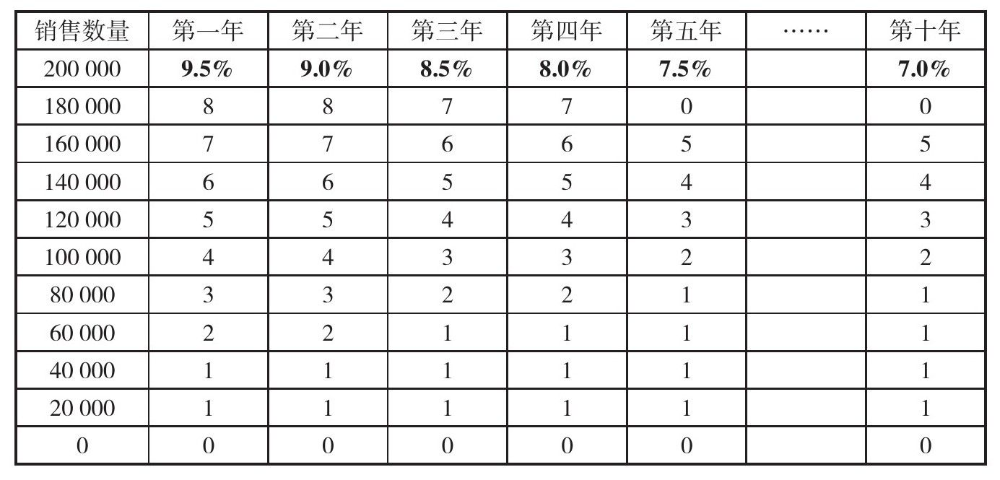
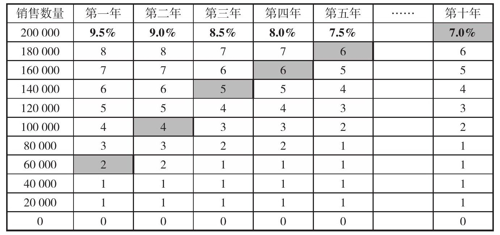

汤姆·温菲尔德（TOM WINGFIELD）
出自田纳西·威廉斯的《玻璃动物园》
“你们要想出一些新主意。你们都是各说各话，而不是相互沟通。” 6 这是负责调停美国国家橄榄球联盟（NFL）队员与雇主之间升级的矛盾冲突的美国地方法官阿瑟·博伊兰（Arthur Boylan）一番大为光火的话。当时是2011年5月，球队雇主已将球员们拒之门外。双方都想借助法律的力量获得主动，因此双方对簿公堂。最终如果协议无法达成，下个赛季情况堪忧。这并不仅仅是理论上的可能性：2005年，雇主和球员之间旷日持久的纷争曾经毁了美国国家橄榄球联盟整个赛季，比预期收入减少了20亿美元的进项。而2011年这次，NFL的损失将更加惨重，损失额预计会高达100亿美元。
关乎职业体育赛事如此巨额的金钱利益，你或许可以想见谈判桌上你争我夺的白热化激烈场面绝不亚于粉丝们在球场上看到的。2011年这场风波由新的集体劳资协议条款（collective bargaining agreement, CBA）引发，这是一个雇主和队员工会之间达成的多年协议，所有NFL队员的个人合同的谈判都要基于此。CBA的种种规定中包括队员和雇主之间的收入分配、薪水上限、最低工资、自由球员市场规则、年度草案条款，以及工作条件。与大多数体育界CBA中的纷争类似，2011年风波中最明显和最具争议的问题也是围绕雇主和球员之间的收入分配，即收入中多少比例归球员，多少比例归雇主。在本案例中，雇主要求留出总收入中20亿美元的额度用于支持投资，收入剩余部分再用于分配。据此，球员们可以分得收入剩余部分的58%。球员们不同意雇主扣留的额度，而是要求总收入平分。 7
双方各自要求的相加将超过总数，而哪一方也不想让步，那么你将如何解决这个纷争？
◎看似不可能的谈判
冲突升级，友好协商变成了对簿公堂、各耍手腕，甚至诉诸美国国会进行评判。当然，最后终于柳暗花明。问题的解决在于各方最终同意了一项提议（来自雇主），对收入分配提出了一个全新的结构。他们决定向前迈出一步，不再纠结于各方分得的收入比例。相反，各方将“所有收入”放入独立的三个“资金桶”，分别代表NFL不同的收入流。然后，他们通过谈判确定每个桶里收入的不同分配比例。这个主意解决了问题。最终协议于2011年8月4日签署，规定了球员的收入为：
然而，这个解决方案回避了问题的实质：球员从该协议中分得的“所有收入”的比例究竟是多少？把这些数字计算一下，就会发现合同执行的第一年，“三桶方案”会让球员获得所有收入的47%—48%。但是等一下！如果是这样的话，为什么还要不辞辛劳地创造出三个资金桶，还要给每个桶不同的分配比例呢？为什么不能免去创造一个新的核算体系的麻烦，直接同意给球员分配所有收入的47.5%呢？
从经济学角度可以理性地解释为何三个桶比一个大桶是更加明智的解决方案。想来是考虑到合同执行一年后会发生什么。如果球员期望联盟媒体收入增长更快的话，就意味着他们在未来的收入中占有更大份额，而雇主则会预期当地收入部分上涨更快，这样，三桶分配法就是一个“增值”的解决方案：它使每一方最看重的那个桶在收入分配中占有更高比例。这个经济学上的理性解释存在的唯一问题是，它几乎跟为何双方一致同意“三桶”分法毫无关系。我们还能确定，如果你继续读CBA，看到其中如此表述的另一个条款，这个经济学上的理性解释就更立不住脚了：
换句话说，双方都同意所有收入的大概47.5%归球员。如果比例相对47.5%向上或者向下有较大程度的偏离，它会被强制拉回这个相对严格的区间。 8
那么，我们的老问题又来了：如果这个协议与在合同期内每年双方达成一个特定的收入分配比例无甚区别的话，我们为什么还要自找麻烦创造三个桶呢？要回答这个问题，首先，我们需要记住很少有人会真的非常仔细地阅读此类合同，而且也没有媒体会对这些协议的细节进行全面报道或者分析。其次，在未来年份中收入分配比例也都有可能会有小幅度的调整，尽管这在实际上也无关紧要。最重要的是，三桶方案优于一桶方案的一个关键的方面在于：它使得每一方回到自己的地盘，都可以宣称自己是获胜者。它创造了足够的空间让联盟谈判者向他们的雇主汇报，雇主投资更大的领域可以获得更高的收入分配比例（即与场馆有关的收入），而球员协会的谈判者也可以宣布，只要粉丝收看比赛的电视频道，他们就能获得这项收入的50%以上。
◎控制架构
正如NFL的例子告诉我们的，即使谈判困难重重，各方僵持不下，但不花钱、不劳神也可以打破僵局。 9 甚至双方争执的焦点就是“钱”，联盟也并没有在谈判桌上抛出更多的“银子”让球员就范而达成协议。相反，他们所做的正是“架构”之力的很好诠释：客观上完全相同的提议仅仅因表述不同就能使其增色或者失色。
谈判的“架构”就是一个心理镜头。它是个“意义生发器”，影响着人们如何看待对方，思索手头面临的问题以及现存的选择。在谈判中，架构的数量和类型并没有限制。例如，谈判者可以从财务或者战略的不同视角看待一项协议，也可以从短期或者长期出发，抑或认为这是一次友善或者敌对的交锋。同样，外交家可以从政治或者安全角度考虑一个问题，或者把其作为一个核心或者外围问题考量，或者将其置于历史或当下的情境下思考。交易人会将提议与自己对此次交易最初的设想进行比较，或者与对方从此次交易中所能获得的进行权衡，或者与他人如何评判进行比对。
没有“正确”与“错误”的架构之分，但是究竟采取哪种架构却对各方的行为模式，以及他们最终愿意接受什么有重要意义。例如，有时各方并不太在意的无关紧要的问题，如果夹杂了政治的或者象征性的含义，各方就不愿或者无法做出让步了。近年来，美国国会的民主党和共和党就总是面临这样的问题：对微不足道的问题进行妥协就会被某些党徒认为是彻头彻尾的背叛，因此即使在紧要关头或者问题实质得到两党的支持时，双方也相持不下，很难达成共识。
重要的是，谈判者几乎总是有力量左右架构，而且如我们将要看到的，重新架构是一个威力强大的扫除谈判障碍的工具。无论客观的利害关系是怎样的，人们如何面对一个问题的态度大多数情况下取决于他们（或者他们的伙伴们）主观上如何理解它。交易人对于他们认定的敌对者是不愿意做出让步的，但是如果他们认为这个举动是为了协作性地解决问题而努力时，就会顺从了。谈判者如果把一个冲突理解成“胜者赢得一切”，就会比认为大家“共赢”的谈判者面临更难的抉择。谈判者如若从短期着眼而不是立足于长期，或者这项提议比他们当初预想的更好而不是更坏，他们就会多多少少更愿意接受某项提议。我们在整个这一章讨论架构之力时，将着重探讨客观上完全相同的提议或者选择如何通过重新架构让另一方看上去更加有吸引力。不仅仅去关注所要谈判的实质问题，更要关注各方透过什么“镜头”评估他们的选择，有时这才是打破看上去无法逾越的僵局的利器。
◎帮助对方让步的重要性
谈判者在谈判初期所面临的问题，同随着谈判推进而暴露出的问题会有所不同。其中一个关键的区别就是，某人是因为什么固执地坚持你无法满足的要求。如果这个现象出现在谈判初期，则说明你并没有对合理的预期设定合适的界限。这会导致对方得寸进尺，即对方要求你做出的让步是你根本无法通融的。这就是为什么在谈判伊始，教育对方你所能提供的界限是什么，以及在什么领域你可以多多少少来灵活对待，算是一个很好的做法。谈判者未能如此做的原因是出于错误的理念，认为对方熟知谈判的边界，或者因为他们担心讨论关于界限或者约束之类的话题，会让对方对他们作为合作伙伴的价值产生怀疑。也或许是因为双方缺乏足够的信任，使得每一方都不相信对方能够真正约束自己，或者不相信可操作的空间的确很小。
如果双方一开始就陷入了不可调和的僵局，通常意味着他们当初的愿望不切实际，而且谈判桌上的价值远不能满足他们的胃口。如果双方都想从这笔交易里捞到50%以上，那你面临的问题可就严重了。这可绝不是因为数学没学好的缘故，你越早意识到这点，对你就越有利。显然，NFL的谈判僵局就属于此种情况。类似问题在外交谈判和商务纠纷中也层出不穷。
但是，在谈判过程的某个节点上，或许经过几周的接触，数月的磨合，或者多年的僵局，一方或者双方都可能认识到他们初期的要求是不可能实现的，需要适时做出重大让步，从而避免真的可能出现的灾难性结局。当那天来临，你还是会发现人们仍然不想降低自己的要求。那时，就不存在教育或者信任的问题了。眼下的问题是如何让对方承认他们当初的要求是不合理的，他们应该让步，并且接受切实合理的方案。而且，如果对方需要公然让步，情况就更糟糕了，因为他们在他人（自己的伙伴或者媒体）面前一贯强势。以我的经验来说，让人们意识到自己过分的要求无法实现还是相对容易的；而让他们承认这点并改变做法是难上加难的。这就是NFL谈判者遇到的问题，而这个问题最终还是得以妥善解决。
◎重视谈判风格和架构，而不仅仅是谈判的实质内容
当NFL谈判陷入僵局时，任何一方都可以通过减少自己的收入需求而让对方对该协议更感兴趣。但是，这将是代价沉重的让步。正如最后的解决方案所呈现的，你不必总是为推动进程、解决问题而砸钱。有时，在谈判风格和结构上的聪明让步要比对实质内容的高代价让步实惠得多。在本例中，三桶方案似乎帮着各方接受了一个一桶结构时完全不诱人的协议，而本协议前前后后的实际价值几乎完全相同。特别关注风格和结构的谈判者往往更擅长冲破抵制、避免困境以及达到目的。
下一章，我们将更加细致地考察几个案例，进一步了解如何通过调整谈判框架而不伤财不劳神地打破僵局。进而，我们还可以总结解决诸如此类冲突的更多原则。我们还格外关注了NFL谈判中起作用的两个因素，而这两个因素导致僵局尤其难以打破。首先是“幕后听众的问题”。对方不仅仅关注从你那里得到了什么，而且也在意其他人如何判断他们从你那里获得的价值。其次，是“零和游戏问题”。在零和游戏中，一方获得的价值严格等于另一方失去的价值。 10 如果人们在谈判中陷入这种“分裂不和”的思维，其他有益的方面将不复存在，他们就会觉得自己吃了亏而对方占了便宜，因此就很难做出让步了。让我们看一下这些问题是怎么解决的。
我们谈的是一个商业大单。 11 我提供咨询服务的公司是一个创业企业，正在一个价值几十亿的产业内开发具有潜在颠覆性的产品。坐在谈判桌对面的一方希望获得我方产品的特许权，并且帮我们打入市场。因此我们需要就广泛的问题展开谈判：特许经营费、版税率、排他性条款、节点、开发承诺等等。我们在版税率的问题上困住了，即他们需要支付给我们的每件售出的商品销售额的百分比。
在讨论初期，双方非正式地同意5%的版税率，并且认为是合理的。但是随着时间的推移，我们对于这个比率的应用有细微的分歧。我们的观点是5%的比例低了，但是作为产品投放市场初期所支付给我们的比例还是可以接受的。但是当产品在市场上获得认可并站稳脚跟后，我们认为版税率应该上涨到一个合理的更高的水平。我们理解，我们的基础尚处于开发阶段，初期销售动力较低，他们对我方产品生产的巨额投资值得我方对此做出让步。
而对方的观点跟我们截然相反。他们认为，由于他们出资，因此版税率最初应该接近于零；两到三年后，可以给予5%的版税率；而这之后版税率应该下降而不是上涨。“版税率为什么不升反降？”我们问道。“因为在我们的行业内，经过一段时间，版税率都是下降而不是上升。就是这么个规矩。”他们回答。经过深入考虑，他们又给了一个说法：“如果经过一段时间我们能够销售掉你们更多的产品，你们就会愿意接受更低的版税率了。”
我们最初的希望是能够避免正面应对这样的问题，因为整个交易的金额巨大，有这么多钱入账，对于他们这绝不会是一次“血色交易”。随着日子一天天过去而谈判毫无进展，我们意识到他们真的是陷入了一个念头中，那就是“版税率是应该下行的”。他们是担心这个谈判结果会成为他们其他交易的先例吗？还是他们已经给董事会做出承诺，现在他们不想丢面子？还是他们仅仅就是想确保更佳的财务状况？尽管尽力了，我们还是无法接受版税率是逐年下降的。而且，如果我们尽力满足了对方的想法，在头一两年里接受更低的版税率，那么我们在未来就更需要提高版税率。这可怎么办呢？
◎不伤财，不劳神
有时，如果双方立场对立，就需要一方做出让步。也有的时候双方都需要妥协，从而有个折中的办法（比如，我们可以达成一致，版税率保持不变）。而也有些时候物理学规律并不一定适用于谈判：事物可以同时既升也降。
当我们注意到我们的讨论中出现的一个瑕疵时，突破口就得以显现：我们谈判版税时仅仅纠结于一个维度（时间的推移），但是我们的分歧却清楚地表明同时存在两个维度：时间的推移和销售数量。或许我们可以利用这一点，创造一个可以同时上下的版税方案。如果对方想看到版税率随着时间的推移而下降，我们可以接受这一点，只要销售量更大时能确保我们的财务利益更大。想到这里，我们给他们发送了一个版税表，并不仅仅列出每年的税率。相反，我们生成了一个二维表格，列出的税率是时间和数量的函数。大概意思如表1所示。 12
表1

每一年，我们不是采取单一税率，而是根据销售的数量规定一个幅度（最小值和最大值）。每年的最高版税都逐年递减（顶行），我们希望这能契合对方降低版税的要求。同时，如果我们销售量更大，每年的实际税率都是逐年递增的。我们对版税率实际走向的期望值如表2所示，突出显示的格子代表我们的内部预期。
表2

这个办法奏效了。对方跟我们就表格中的一些数字又纠缠了一番，但是这个新的提议重新框架了我们的对话，避免了僵局。双方没有再纠结于版税的走向轨迹，抑或版税上行或者下行的根据，并且接下来几周，问题迎刃而解。最后的协议包括了一个简化的税率表格（行和列都变少了），涵盖了时间和数量两个维度。或许这与单一维度下达成一致的版税率的可能性相差无几，但是这种“文风”却让我们的谈判伙伴对这个协议的“观感”感觉更加舒服，而我方则对最终的收入结果更觉舒心。
◎关注“协议观感”
正如此例所示，不仅是我们提出什么建议内容，我们如何提出建议的方式也是至关重要的。谈判者往往误认为只要把协议的实质内容搞对了，即你的提议对对方而言是足够有价值的，你就不必在意“它看上去是怎样的”，这就是我们所谓的“协议观感”。但是，此例以及NFL谈判中，摆在桌面上的价值并不是问题，而问题所在恰恰是提议架构的方式。
而在有幕后听众的情况下，观感的作用更加明显。幕后听众可以是投票人、媒体、竞争对手、未来谈判伙伴、老板、同事，甚至是亲朋好友。我们往往能够意识到我们的幕后听众的存在，却忽视对方的幕后听众。实际上，他们的幕后听众应该同我们的一样受到重视，尤其是当我们想要他们让步或者做出重大妥协。把他们的幕后听众看作“他们的问题”，忽视了最棘手的谈判的最核心宗旨：根本不存在什么所谓“他们的问题”；那些所谓的“他们的问题”，如果不加解决，最终会成为“你们的问题”。可能你给出的方案已经优于对方给出的了，对方“理应”接受，但是你如果没有充分考虑可能影响他们决策的其他因素，你会发现即使你再慷慨大方也会被对方拒绝。
◎帮助对方赢得幕后听众
在1991年关于谈判技巧的丛书《突破拒绝》（Getting Past No）中，作者威廉·尤里（William Ury）使用了强调帮助对方赢得幕后听众的强有力的短语。尤里告诉我们要为对方“谱写胜利的篇章”。我总是要求我的学生和客户不仅仅要仔细考虑能为对方带来多少价值，而且要注重他们及其幕后听众如何看待这个提出的方案，思考他们如何赞同你的提议而同时还能宣告胜利。如果你无法开辟一条蹊径，让他们将协议解读为“获胜”，你们就可能会有麻烦。
这并不意味着你应该以改变谈判风格或者架构的手法拿下这单买卖，因为结果往往损人不利己。本章后面的部分，我们将着手探讨这样做的可能性及可能出现的问题，但是眼下，让我们领略一下各方如何从有效的架构中获益。在NFL的案例中，重新架构的“三桶方案”创设了一个叙事结构，双方回到大本营后都可以声称这是他们谈得最漂亮的一桩生意。重新架构避免了来自谈判者的一个僵局，那就是太注重自己的形象而没有考虑到自己“选民”的感受。在我们的版税率谈判案例中，我们能够想出一个有实质内容的方案让对方也很受用，但是他们仍然需要帮助架构方案内容，从而使那些非实质性的顾虑不会让谈判功亏一篑。
同样的原则也适用于并不太复杂的场合——例如，你在争取一个就业机会时，如果人事经理想增加名额或者给你“开绿灯”，他或她将需要在公司内部提供正当理由。我总是提醒我的MBA学生要帮助对方想出他们所需要的措辞和叙述方法，去解释为何在这种情况下他们做出的让步是恰当而且必要的。
◎让对方心安理得地寻求帮助
对于对方真正需要的是一个实质性让步，抑或仅仅是对方幕后听众如何看待你们所提的方案的问题，很多情况下并不明朗。而且正如你们所怀疑的那样，对方通常不太愿意明晰究竟属于哪种情况。如果我方准备做出一个实质性让步，而他们首先承认不需要的话，对他们来说是划不来的。而如果告诉我们，我方的提议实际上价值连城，又会削弱他们进一步讨价还价的能力。最后，如果公然让我们知道，他们要想交差需要我们的帮助，对他们来说就是示弱的表现，会破坏谈判进程。这些都是可以理解的顾虑，让他们纠结于协议内容的观感，让协议看起来还有很多不足之处。
如果双方有足够的信任，对方就更有可能坦诚相待，告知谈判中的真实阻力在哪里。即使双方信任度较低，谈判者之间专业的坦诚相待，相互尊重，也有助于向对方表明他们是否卡在协议观感上了。“表露心迹”时也可能伴有一定的否认，他们发出的信号可能含混不清，如果一再催问，他们可能否认有这些需求，但是你知他知，其实，对方的意思已经传达出来了。
还要谨记很重要的一点，如果对方认为你们总爱利用对方示弱的任何蛛丝马迹，那么这些信号就很难获得。简言之，你们让对方告知实情时越有安全感，他们就越愿意这样做。 13 让对方有安全感的最佳方式是他们通过自己的行动表明，你们不会利用对方，而且对他们因在重要问题上表现出诚实和磊落所承担的风险表示感激。根据我的经验，重复性的谈判或者几个月甚至几年来不断打交道的谈判双方，就不需要构建这样的信誉；就算在一次谈判中，无数细微之处也能让这样诚信、可靠的信誉建立起来。例如，如果对方分享了敏感信息或者做出让步，你能“礼尚往来”，回报以你们的承诺，或者适时表现出灵活性，而不是在任何一点上都斤斤计较的话，信任就建立起来了。
◎避免单议题谈判
版税率谈判凸显了谈判中的一个共同问题：陷入一个单一的问题。或许有悖于你的直觉，多维度问题同时展开时谈判往往更容易推进。如果谈判桌上只议一个问题，就很难看到双方如何如愿以偿，或者如何兑现他们向自己幕后听众的承诺，这样你们就会面对“零和游戏”的问题，至少有一方会觉得自己有所损失了。在这种情形下，你就需要考虑在谈判桌上引入其他问题，从而使各方都有所得。如果我的一个孩子想要另一个孩子正在玩的玩具，我通常会建议他或她再拿来一个玩具，从而可以做一场交易。如果两人都争执不下去抢一件玩具，往往会不欢而散。
为了变通，你可以考虑把两个独立的单议题谈判合二为一，变成更为轻松的一次性谈判而不是难度更大的两次谈判。我的孩子们跟我讨论周五和周六能看哪些电视节目时，如果把两天放在一起来谈，而不是两天单独来谈的话，他们更容易跟我达成一致。两次讨价还价被一次讨论所代替，而且每人都能各得其所，何乐而不为呢。
有时，仅仅引入一个微不足道的辅助议题足以打破僵局。你帮着对方创造的这个“赢局”未必比他们在另一个议题上给予你们的更有价值。值得注意的是，他们在不同议题上已经愿意跟随你们就范，他们只是寻寻觅觅，想创设一种说辞，即“双方都做出了让步”。
◎多个议题同时谈判
即使谈判中存在多个议题，就算我在目前讨论议题上做出让步是寄希望于对方在后面的议题上做出让步，或许我也不愿意冒这个风险。要打消这些顾虑，谈判中多议题同时推进往往是明智的做法。换言之，不要试图以此就一个议题达成协议，而是养成习惯，“打包”进行讨价还价。例如，“这是我们在议题A可以做到的，这是我们对议题B的需求，这是我们在议题C上可以接受的”。这样可以满足两个目的：第一，如前所述，这消除了目前我方让步，但后续对方没有回应的风险——你可以视对方的行动而做出相应让步；第二，多个议题组合讨论时，谈判者能够更加轻易地在议题之间做出取舍——你可以捍卫你自己更加在意的，作为交换可以舍弃对方更加看重的。相形之下，如果你们一次只就一个议题谈判，人们就会拼命争夺谈判桌上此时出现的任何利益，这样就很难看清各方实际最看重的是什么。
例如，如果我正在进行一个复杂的商业谈判，有人想孤立地谈一个问题（比如，价格），我通常会转移话题，引进其他议题。有多种方式可以达到这个效果。我可以说我对价格的立场取决于其他条件的满足，所以我们最后敲定价格之前还需要讨论很多问题。我可以给“一揽子”方案出价格，并明确我们申报的价格还包括了下列条件。我也可以提供多重方案，每一个方案包括一个报价和不同的条件，从而让对方可以更好地理解议题间有什么关联，以及我可以表现出的灵活度。这些战术都有助于我们避免陷入单一议题的困境。
◎分散注意力
谈判桌上推出多个议题，更容易达成一个协议，容许各方都有一些“赢局”。然而不幸的是，即使存在多个议题，有时某个议题也会成为最突出的，而且每个人都据此来衡量谈判中谁是赢家，谁又败北。这恰恰是NFL谈判中存在的问题；即使一方在其他问题上得到了对方里程碑式的让步，大多数观察者仍然用收入分配的问题作为衡量成功的唯一晴雨表。各政党对立法问题谈判时我们也可以看到这个问题。问题产生的原因不尽相同。有时媒体或者其他幕后听众信息和专业知识有限，只能通过一个突出问题做出判断。而有时非常遗憾，是谈判者在措辞上夸大了某个单一问题的重要性。政治家这么做是为了煽动支持者的热情，生意人不经意地这么做是为了高效地表明立场。在有些情况下，即使没有幕后听众，问题也会出现；一个议题会凸显是因为一方或者双方都过分强调这个问题的重要性，想给对方一个下马威。
◎把议题一分为二
当然，在很多情境下，某个议题客观上的确是最重要的。而且，尽管你努力争取过了，但是在谈判中实在没有（或者不可能纳入）其他相关议题。即使在这些情况下，也有其他策略避免这种胜出/败北的结局：把一个议题分为两个或者更多。这就是NFL谈判者们所做的，把一个收入数字分解为三个独立的收入“桶”。在这个商业谈判的协议中我们如法炮制：把“每年的版税率”分解为“每年的版税幅度”和“基于销售数量的版税率”。再回到孩子们和玩具的例子：如果只有一个玩具，你可以通过讨论谁现在得到玩具谁稍后得到玩具，把问题“一分为二”。（注意：尽管也有些例外，但是把一个玩具一分为二可就适得其反了。）
◎为隐晦的利益揭开面纱
一个看上去有争议的议题有时包含多重可调和的隐藏利益。在这种情况下，你可以通过揭开隐晦利益的面纱而突破僵局。例如，考虑下列情形，一个员工就加薪跟老板讨价还价，而老板毫无此意。原因或许是老板认为这个员工不应得到这么高幅度的加薪。若是此番情形，一种选择是他们两方“各让一步”，找一个双方都能接受的幅度。如果无法达成一致，他们可能会分道扬镳。但是，如果老板认为员工的要求是合理的，但在员工初次提出加薪要求时无法满足的唯一理由是今年的预算吃紧，这该怎么办？如果是这种情况，不必折中，相反，明智做法是把问题分解为“今年的薪水”和“明年的薪水”。用这种方法，老板今年可以不用触及预算，而员工来年可以拿到更高的薪水。
换言之，双方都可以满足他们隐晦的利益（获得加薪，保持预算），但是要想促成这个结果，还需要双方停止争执“他们想要什么”，转而讨论“他们为什么想要这个”的背后动机。此举称之为从立场（人们想要什么）到利益（他们为什么想要这个）的转变。即使你们在同一个问题上立场不同，但是你们的利益或许是契合的。你越是能快速地从争论立场转变为谈判背后的利益，你就越能快速地确定双方需求是否可以调和。
◎实质内容上坚定，结构上灵活
谈判高手必要时说一不二，但是会随机应变、灵活变通。当你评估了各方拿上谈判桌的利益点，在你充分考虑了什么样的要求是合理的以后，对你应得的一定要据理力争。但是，你对实质问题的坚定不应演变成顽固不化，尤其在如何满足你的要求这个问题上。如NFL和版税率这两个例子所展现的是，你越是对协议内容的框架结构不那么苛刻，就越是能找到皆大欢喜的方案。这种灵活度让对方有更多选择，从而他们就更有可能以某种方式满足你的需求。以我的经验，在谈判过程中，你的一言一行给对方发出的有用讯息应该是这样的：我知道我最终的目的地在哪里，我对如何到达那里保持灵活性。或者换种说法：你越是让对方在你那里存更多现金，你就更有可能得到回报。
◎不陷入僵局是一个弥足珍贵的短期目标
你可能已经注意到了，我们关于版税率“二维”而不是“一维”的谈判方案并没有马上解决问题。相反，对方把这个方案打回来了，挑出了我们在提议结构上的问题或者错误，但是根本没有提及我们要求的版税率对他们而言太高了。但是，这个提议的精妙之处在于我们并没有纠结于某一个议题而停滞不前。我们讨论的都是一些实质性问题，但最终都是可以调和的。这一点很重要：构思能满足对方幕后听众的敏感需求或者能协调不同议题的谈判方案，也未必能解决所有的冲突，或者最终搞定整个谈判。然而，这些方案能大大减少陷入僵局的时间，促成双方都能接受的协议的达成。
迄今为止，在我们讨论的例子中，双方目标不同，就会导致他们的需求不可调和，从而产生僵局。但是，即使在同一间屋子里的人们利益一致，而且目标相同，仍有可能陷入僵局。人们对实现目标的最佳方式可能各执一词。会出现这种现象是因为人们之间没有充分的信任，或者因为人们没有充分说明他们方案的优点，或者因为每个人对正确道路有自己强烈而不同的先入之见。我们在下一章将会在人际互动领域领略更多发挥作用的因素，与我们前面讨论的情形都有所不同。主要讨论当一个人现有的理念或者预期遇到全新、外来或者不同的观点时，架构策略如何帮助其克服心理障碍。
如果你有最佳的、创新性最强的提议，你怎样向坚持走自己路的人表述？你可能全心全意为对方考虑，但是跟坚决抵制变革的人，你如何谈判？你或许是对的，但是如果对方存心跟你背道而驰，你将如何说服他们？
我们可以考虑一个诊断出前列腺癌前期的病人的案例。 14 在美国，大多数前列腺癌患者是通过一种叫前列腺特异性抗原（PSA）检测法筛查出来的。 15 大量证据显示许多PSA诊断出的前列腺癌属于过度诊断，也就是说，如果病人没有进行PSA检测，根本不知道自己罹患癌症的话，也能活到正常的寿限。 16 世界知名的癌症研究和治疗机构之一，位于纽约的纪念斯隆-凯特琳癌症中心（MSKCC），通常推荐前列腺癌症早期患者进行“积极的监测”，而不提倡手术和放射疗法等治疗方法，因为这些治疗都会产生副作用，如小便失禁和勃起功能障碍。这个推荐意见跟国家综合癌症网络指南和美国泌尿外科学会指南是完全一致的。
按照积极监测方法（AS），将对患者进行PSA检测、定期的活组织检查和体检；如果有迹象表明病情发展到了更严重的阶段，就推荐病人进行治疗（例如，手术或放射疗法）。AS计划通过包括每六个月一次的实验室监察和体检，每两年一次的活组织检查来监控病情的发展情况。
身为公共卫生学硕士、医学博士的贝法尔·艾德（Behfar Ehdaie）医生，在MSKCC任主刀大夫，他发现只有60%的患者接受推荐的AS法；而其他患者则选择手术或者放射疗法，不愿意接受推荐的积极监测法。其他MSKCC的医生也发现自己的病人对推荐的AS法的接受率也大体相当。而且，也可想而知，医生跟病人讨论，劝其同意接受AS法往往耗费较多口舌。为何这么多的病人不愿意接受专家推荐的方法——尤其是医生推荐手术其实可以挣更多的钱，而且手术和放射疗法都会影响到生活质量？怎样做才能给病人更好的结果呢？
◎不伤财，不劳神
艾德医生和他的合作者安德鲁·维克斯（Andrew Vickers）医生开始进行试验，试图改进与病人讨论AS法的沟通效果。艾德医生找到我，他希望我们一道研究如何改进AS法的讨论模式，而且从更普遍的意义上，帮助其他医生提高与病人的沟通技巧。注意：他的目标不是如何让其他医生开出AS或者其他治疗法的医嘱——这是每个医生自己的选择——而是去帮助外科医生们如何行之有效地推荐他们认为合适的治疗方法。 17
看起来这里的核心问题是我们要求病人考虑一种治疗选择，但是跟他们当初认为的他们应该选择的方法是完全不同的。如何克服这种抵触？我们应该如何帮助病人更加审慎地考虑怎么做才是对自己最有利的？基于艾德医生已经开始实施的想法，我们共同努力，根据现有心理学研究成果和我帮助公司机构向客户和利益有关者清晰表述价值命题的经验，我们认为应该重新锤炼沟通方法。成效相当明显。自从改变了诊室中的谈话方式，根据三个月来收集的数据，艾德医生的病人对AS方法的接受率已经从60%提高到了95%。艾德医生付出多少代价才促成这个改变的？分文未花。首先，新方法并不需要对政策、行政管理结构或医生、医院和保险公司之间的交流互动做出重大改变。另外，他对癌症早期病人的问诊时间也较之新方法实施之前的平均60分钟大幅下降到了35分钟。医患对话不但是有效的，还是高效的。
在此，我分享一下艾德医生跟病人沟通时采取的几个原则，从而确保谈话不会偏离正轨。 18 我特别需要着重谈如何重新架构选择来克服病人对改变的抵触。几个原则交织在一起，就好比一个应对抵触情绪的秘籍，不但适用于这个场合，也同样可为各种谈判所用。
◎适恰性逻辑
人们如何做出决策？人们如何确定他应该说“是”还是“不”，该选择“A”还是“B”，该作为还是不作为？我们都非常熟悉人们做出选择的一个途径：成本效益分析。它的基本观点是人们衡量所有选择的成本和效益，挑出整体上的最佳方案，或者根据风险偏好做出一定调整。但是，人们任何时候或者大多数时候都照此出牌吗？社会科学家詹姆斯·马奇（James March）和约翰·奥尔森（Johan Olsen）提出了另外一个决策模型，他们称之为适恰性逻辑。 19 他们建议，与其陷入潜在复杂并耗时的成本效益分析，人们通常可以通过问自己一个简单的问题做出决策：“一个像我这样的人在类似情形下会做什么？” 20 这个问题一提出后首先跃入脑海的答案往往对人们如何选择行为模式有重大影响。
如果我们郑重对待适恰性逻辑，它意味着我们应该留意人们是否认为我们的方案或者倾向的选择是“适恰的”，以及我们如何增强提出方案的适恰性。心理学上（以及最近的行为经济学中）进行的大量工作都围绕说服力这个话题，以及如何进行框架选择使他们更有吸引力。在我与艾德医生共事的过程中，我们引入了其中的三个观点来提升AS的适恰性。这里我又加入了第四点，看似与医患谈判没有直接关联，但是对许多谈判语境都是非常重要的。依据我的经验，这些原则都是最强有力、应用广泛的手段，能增强一个观点或者提议的适恰性，甚至是增强其吸引力。 21
1.利用社会认同
“社会认同”原则，由社会心理学家罗伯特·西奥尼迪（Robert Cialdini）提出，他表示，当人们无法确定选择哪条道路或者选择什么时，他们就会参照其他人实际或者隐含的行为。 22 根据适恰性逻辑，如果我们认为其他大多数人在实际做什么，这个行为就一定是适恰的。这是因为当人们放眼看这个世界，他们会认为这个世界自有其运行之道。如果他们看到别人选择某种行为轨道，他们就会自言自语“这一定是有道理的”，并且据此认为这是正确的、正常的或者可接受的行为。毫不奇怪，提高选择适恰性的最直接方式就是表明其他人也选择了它。艾德医生描述了在改进方法之前，他是如何违背了社会认同原则的。他先前竭尽全力突出MSKCC的独特性，而这恰恰让病人转身不选AS法。他充分利用社会认同的威力，改变了说法：
成也独特性，败也独特性
在商务谈判中，同样的原则也广泛适用。例如，大多数人都懂得“标新立异”可以看作有吸引力和影响力的源泉。但是，正如患者的例子所显示的，当我们着急忙慌地将我们的方案刻画成独特的、开创性的并且优于竞争对手的时候，我们就是在公然搬起石头砸自己的脚。例如，一个销售员煞费口舌地说服客户，她将有幸成为这项新技术或者新解决方案的第一批试用者，他会发现自己的兜售会被下列事实所侵蚀（或者彻底摧毁）：对方会听出话外音，原来“像我这样的其他人并不会这么做”，并且思忖“他们怎么会知道我也不会这么做呢？”或者“现在还不用着急这么做”。在这种情况下，销售员就需要中和一下“独特性”的说法，加入一些其他信息，从而冲淡客户刚才的顾虑。
2.设置默认选项
默认选项是适恰性的另一个标志。如果某物是一个场景下假定或者预先设定的选择，就会让人们得出结论“这一定是出于某个原因默认的选项”，即这一定是大多数其他人做出的选择，这是正常的或者是可以接受的。研究表明，人们会受到默认选项的强烈影响。即使他们可以随心所欲地做出选择，偏离默认选项（即现状）也会给他们带来心理负担。无论人们是在不同战略还是不同产品中进行选择，设置一个默认选项，你就提高了它的适恰性。严格来说，这个原则并不是说默认选项一定是吸引力最大的，但是当它一旦变成默认选项，其吸引力就被提升了。以前列腺癌为例，当患者进入诊室，手术通常是他脑海中的默认选项。如果你在对话之初就把他们的默认选项转化为AS，那对话的展开就容易多了。但是如果让手术成为先入之见，过后再拼凑种种理由背离它，就会发现这将是一场艰苦卓绝的恶战。以下是艾德医生实施这个原则的描述：
你来起草协议初稿或者启动谈判流程
当你为一份合同而谈判时，谁来设定默认选项？这个选项存在于哪里？通常掌握在起草合同初稿的一方手里，或者你用的是哪方的合同模板（即标准合同）。成为提供合同初稿或者在谈判中将标准合同作为模板的那一方，将会占据明显优势。以我的经验，标准合同中的许多条款——甚至是对交易价值有实质性影响的重要条款——通常不会受到质疑，或者因为它们出现在标准合同里，就不会像口头提出的那些条款，总是争执不下。人们的想法倾向于：“如果这一点出现在标准合同里，那一定是有理由的。或许这是很正常的。这很有可能是大多数人都愿意接受的。”
在与谈判有关的学术文献中，研究最广泛的策略之一就是所谓的“锚定”，通常是指不论哪一方最初提出的方案，会强有力地框架整个谈判，并且会塑造另一方对交易中可能的和可接受的条件的认知。因此，整个谈判的最终结果（比如，资产的价格）就与最初的提议密切相关了。 25
默认提议或预期也与整个谈判流程如何设定相关联——例如，完成交易的时间表、谁参与谈判、哪方先开价、议事日程上有哪些内容等。大多数情况下，往往根据先例都有对上述选择的预期或者预先设定的标准。这会让谈判者估量现有的默认选项，并且必要时改变之。就像其他影响框架的因素一样，默认选项持续的时间越长，就越难以改变。如果在对方进入谈判室之前你就能改变默认选项，那是再好不过了。如果不能，那就在谈判初始阶段快刀斩乱麻，改变人们对默认选项的认知。因此，艾德医生尽可能在谈话之初就将默认选项从“手术”转移成了“积极监测法”。
3.转换参照点
10000美元是很大一笔钱吗？这很难给出确定的答案，取决于你做比较的对象或者你的预期。如果你想买一只手表，那这就是很大一笔钱，价值不菲；如果你想买一座房子或者在讨论国家债务，那么这个数额就不值一提了。关键点在于人们对数据或者选择的反应或者评估并不是在真空中进行的。一个人在评估一个方案、考量时间表的合理性或者衡量一个性能指标的成功与否时，脑海里都会有个参照点。如果参照点“错了”，即使是最好的数据或者最有价值的提议也会被做出相反的评价。那么，在表述信息之前，设定一个恰当的参照点就是明智之举。如艾德医生所解释的：
无论你是在商业谈判中，还是在武装冲突中，或者在医生诊室里，受众脑海中的参照点将决定你的提议会被看作平衡的还是一边倒的，是慷慨的还是不公平的，是令人舒心的还是不安的。很重要的一点是谈判者要确保对方在一个适恰的语境下评估方案的实质内容。总会有一个评估方案的语境——也就总会有个参照点。对默认选项而言，现有的参照点是否合适或者有用，或者是否需要重新设定，这都是值得关注的。
4.不要为你的方案道歉
如果一位医生给出了尽可能好的建议，但是又因为病人对建议的不喜欢而表露歉意从而削弱了建议价值，这样做有百害而无一利。同样的道理适用于所有类型的谈判。例如，我帮助过很多提供创新性产品和服务的公司，在许多情况下，这使得他们的价格点比竞争对手的高出十倍。当销售员首次报出这个高价格时，不可避免，顾客的反应是吃惊、失望和不爽交织在一起。“没人会为这种东西付这么高的价格。”此时此刻，销售员犯的最大错误是为这个高价格表现出歉意。然而，销售人员经常会有此举，或许是由于对方的反应让他措手不及，陷入本能的防御，或者努力让对方觉得自己能感同身受。很多言辞和行为可以表露歉意：答复对方“我知道价格不菲，但是……”；立马表示必要时可以议价；偏离了最初高调的价值命题；开始讨论其他公司是如何收费的；或者只是说话时没了底气。因此，一个销售员究竟应该怎么做呢？
在推销或者所有类型的谈判中，如果你精心设计了你的方案，并且认为是合理的，就不要为之道歉。你表现出歉意的那一刻，就相当于给了对方一个讨价还价的许可证。这并不意味着你应该绝口不谈价格。这也不意味着你不应该解释你的报价。但是，当你为自己的方案致歉时，你就相当于给自己套了一个框框，说自己的提议是不合时宜的，而且你认为这个报价也不是一个合理的谈判起点。如果除了竞价你还有更多内容可以拿到谈判桌上，你需要转换到讨论价值的模式上。例如，如果客户抱怨价格太高，销售员或许可以说：“我觉得您一定特别纳闷，为什么我们有这样的价格，还有很多人排队买我们的产品？我们究竟能实现什么样的价值，让我们从竞争对手那里赢得这么多生意？我很高兴跟您有这样的对话。最后，我们都会明白大家都希望物有所值。因此，让我们来讨论下价值定位吧……”
有关提高适恰性工具的讨论，最后一点值得我们思索的是架构的道德观。艾德医生的目标显然是善意的。然而，在其他语境下，我们也必须考虑什么情况下架构是合理的，什么情况下是不择手段的。任何时候你对别人做出的决策施加影响时，很重要的是你不但需要考量自己的意图，还要考虑接踵而来的所有后果。在迄今的所有例子中，我们都尽力将侧重点放在谈判者身上，他们都使用了架构策略来帮助各方打破僵局，实现创造价值的效果。
这并不意味着这些原则不会将人引入歧途——或者出于居心不良或者出于未能考虑他人受到的危害。（本部分后面的章节将探讨这个问题。）但是，好消息是不太容易仅凭架构就能说服人们选择对自己不利的行动。绝大多数情况下，以及在我们讨论的例子中所表明的，只有当你的目标受众愿意，并且甚至是希望按照你引领的方向前行时，架构策略才能发挥最佳效果——只要你让对方轻而易举地跟随。
另一方面，也并不是只要你能在风格和架构上满足对方，对方就能在实质要求上满足你们。在某些情况下，很不幸地，双方都很强势，或者都有很多约束，哪一方也无法接受对方的立场。那么架构之力如何帮助他们？我们在下一章讨论这个问题。
1968年，通过谈判达成协议，各方签订了《不扩散核武器条约》（Treaty on the Non-Proliferation of Nuclear Weapons），又称《核不扩散条约》（Non-Proliferation Treaty）。之所以签订《核不扩散条约》，是为了限制当时世界上五个拥有核武器的国家，分别是：美国、英国、苏联、法国和中国。并非巧合的是，这五个国家同时也是联合国安全理事会（United Nations Security Council）的五个常任理事国。签署《核不扩散条约》，是希望达到一个长期的愿景，合约的签署方要保证：（a）不参与核武器扩散活动，（b）对核武器装备和力量进行裁减，（c）和平使用核能技术，（d）而且要在国际原子能机构（International Atomic Energy Agency, IAEA）的检查和保障下安全地使用核能，坚守自己的承诺。
到20世纪末，已经有190个国家签署了《核不扩散条约》，那个时候仅仅有四个国家拒不签署这一条约，分别是朝鲜、以色列、巴基斯坦和印度。 27 它们之所以拒绝签署《核不扩散条约》，是因为它们做不到像其他签署国那样遵守诺言。即便它们许下削减核武器拥有量的诺言，它们也做不到，而这个条约正是要管制对核武器的独立主权和战略权利。在《核不扩散条约》签署且落实生效的这些年，以上四个没有签署条约的国家，在对核能的研究上取得了很大成功，也发展了自己的核武器。
2005年6月，美国和印度开始了为期三年之久的马拉松式的谈判，意在促使两国签署《民用核能源协议》。 28 前期条件相对来讲还算简单：印度要将本国军用和民用的核设备分离开来，而为了保证他们真的将核能用于民生，他们必须在国际原子能机构的检查保障之下，同美国开展有关核能的合作。当然，它们还受到美国及拥有45个成员国的核供应国集团（Nuclear Suppliers Group, NSG）的监察。因为印度没有签署《核不扩散条约》，这让谈判变得困难重重。还有一些人认为这件事太异想天开。绝大多数人想着，若是同意印度参与到民用核武器买卖中，会违背美国在《核不扩散条约》中许下的承诺。若是将没有签署《核不扩散条约》的国家和签署国一视同仁地对待，签这个条约的意义又何在呢？恰恰相反，布什政府还有核供应国集团当中的一些国家认为，虽然印度没有签订《核不扩散条约》，而且拥有他们自己的核武器，但是他们没有参与核扩散活动。若是将他们置于国际原子能机构的监察之下，参与进民用核能源交易当中，不仅能约束他们自己，而且对核能源的安全使用更有保障。
想要达成协议可并非易事，这种跨国谈判在诸多层面上需要协调统筹。首先，美国需要获得国内立法，允许其跟NPT非缔约国有交易往来[已经通过2006年《海德法案》（Hyde Act）实现之]；其次，美国和印度通过谈判达成双边协议（指的是后来签订的《123协议》）。与此同时，国际原子能机构也要同印度达成共识，将印度民用核设备置于国际原子能机构的监督保障之下；核供应国集团还要授予印度前所未有的豁免权，让其可以拥有核技术和燃料；最后，美国和印度签署外交协议，必须得到美国国会的批准和印度议会的支持。
在谈判过程中涌现出的更加恼人的问题之一，是如果印度再次进行核武器的测验，其引发的后果将使谈判何去何从。1998年，印度在国际社会的广泛谴责之下，前后进行了五次核试验，不仅受到了美国和其他国家的制裁，而且短短两周后，巴基斯坦就进行了报复性的（第一次）核试验。一年之后，也就是1999年，由于巴基斯坦的军事入侵，触碰到印度和巴基斯坦分界“实控线”的克什米尔地区，两国发动了历史上第一次，也是唯一一次已知对方有核武器情况下的传统战争。在这样紧张的局势之下，也就毫不奇怪，为什么美国以及核供应国集团中的许多国家是否支持签署民用核协议要视印度是否再次进行核武器试验的情况而定。 29
但是与此同时，印度方面对此的支持刚好视相反情况而定。如果这项协议会约束到印度在必要时进行核武器试验自主权的话，印度的议会基本上不会通过这项协议。正因如此，印度起初没有签署《核不扩散条约》。如果这项《民用核能源协议》会强加类似于《核不扩散条约》那种限制条件的话，对印度议会来说，完全不可接受。印度早先宣布自愿暂停核武器的试验，却不愿意做出有约束力的承诺。
如果面对同一个问题，双方都不能通融的话，你怎样才能使谈判达成共识？当一方将要求降至最低（出于国际安全的考虑），但是另一方还是完全无法接受的时候（出于国家主权的考虑），你怎样去协调各方利益呢？
◎不伤财，不劳神
2007年，美国和印度开始谈判他们的双边协议；2008年，印度总理曼莫汉·辛格（Manmohan Singh）的政府在议会举行的不信任投票中，幸运留任。同年，国际原子能机构通过了防卫协议，而且45国核供应集团也授予其豁免权。2008年下半年，美国国会通过了这项协议，美印两国于2008年的10月10日正式签署协议。
他们究竟是怎么成功的？是一方减少了自己的要求，接受了另一方的逻辑吗？究竟是哪一方大胆让步？事实上哪一方也没有让步。
那是否美印两国签署《123协议》限制了印度的核试验？如果印度进行了核爆炸试验的话，《123协议》有没有相关规定，能立刻终止美印之间的民用核能贸易？没人敢打包票。
2008年10月1日，时任美国国务卿的康多莉扎·赖斯（Condoleezza Rice）向参议院递交了自己的证词，宣称：“我向公众保证，如果印度进行核试验，将会产生非常严重的后果。美国现有法律规定，如果印度果真进行核试验，两国之间的合作会自动中断，同时还会有一系列制裁行动。” 30
再来看另一边的情况。2008年10月3号，印度外交部部长普拉纳布·慕克吉（Pranab Mukherjee）被问到印度是否要牺牲核试验权来达成协议时，澄清说：“我们并不是要将自愿裁减核试验转变为一种受条约约束的义务，这一点永远不变。” 31
那事态是如何发展的呢？协议实际是怎样表述的？我们只需知道，2008年10月10日，美国国务卿赖斯和印度部长普拉纳布签署了最终的协议。事实上，《123协议》还有美印两国为了交易签订的协议框架虽说早就构建好了，却故意写得含糊不清。而他们这种缺乏精确性的东西，竟然是早就设计好的：这就是战略性歧义的艺术。
◎战略性歧义
战略性歧义其实存在着一定的风险，但若是择机使用的话，也会有不少收获。之所以说它存在风险，是因为其中存在着某些漏洞，会让不同的谈判方可以用不同的解释来阐述某项协议，我们稍后再来看这个问题。但是多种解释也是很有价值的，这是因为有时候谈判双方其实可以接受对方的要求，你愿意同对方达成共识，但是写在纸上或是宣称的时候，就出现问题了。
面对这种情况，美印两国的谈判代表深刻地认识到，任何一项协议，无论是用何种语言书写，都必须加上双方达成共识的一点，即：如果印度用民用核能源来测试核武器的话，无论他们在技术上达到什么程度，美方都会迫于国际和国内的压力终止协议与合作。所以在这项协议当中，有什么内容，或者没有什么内容，并不重要。事实就摆在眼前，如果阻止不了印度按照自己的意愿进行核武器测试，美国就会终止与印度的合作，退出这项协议。如果能够明白这件事，那么美国对此的回应，是谈判伊始就杜绝印度进行核武器试验的最好时机。换言之，双方的动机清晰明了，坐在谈判屋里的人每个人也都表示同意——而且没有异议。但是，将这个规定以文字形式写在协议当中很成问题。谈判员们讨论了几周，应该用什么样的语言去书写，才能够在约束条件下，双方都欣然接受。所有近似于“如果印度进行核武器测试的话……”这样的表述，印度方面都听着刺耳；但是如果不把这个意思写出来，美国也不可能同意。最终的解决方案，有悖于大多数律师的本能反应：协议表述非常模糊，留给了每方解释协议条款的空间，并且以其拥护者喜欢的方式去阐述此协议。
◎如果动机不纯，则战略性歧义会很危险
为了更好地鉴别战略性歧义在谈判者的工具箱中发挥什么作用——也为了有助于勾画可取的清晰界限——我们应该首先将不同种类的战略关系区分开来。有的时候，谈判一方或者双方出于某些动机，而且有能力去占另一方的便宜——并且他们乐意至极——除非一份合同或者一项协议，让这种行为代价高昂或者根本不可能，才能阻止它。如果这样的话，那么在协约当中明确地阐明双方的权利与责任，而且哪些行为是明令禁止的，才是明智之举。若是在这些案例当中，战略性歧义的策略就不适用了。相反，有的时候谈判双方有着共同的利益，这就决定了不管你在不在合同当中写明双方的责任究竟是什么，或者哪些行为举止是明令禁止的，这种关系都能自我维持、互惠互利。那么在这种情况下，合同的表述你就可以灵活点。哪怕有一些不完备，语言模糊不清，若是能帮助解决一些其他的问题（比如那些摆在台面上的问题），倒也不算什么。换言之，战略性歧义实际上是会受到谈判情况的制约的。如果你需要借助一些其他工具来强制对方约束自己的行为的话，就不可以用这个策略。印度外交部部长普拉纳布·慕克吉明确表示，关于民用核能源的谈判符合这个标准——也就是说，这项协议是基于双方的权力与利益，国家内部自主实施的协议。就在签署协议的几天前，他还说：“我们有权进行核试验，但是对方也有权对此做出反应。” 32 这种话不适合写在协议当中，但用来说给国内的幕后听众倒是很合适。更普遍的一种现象是，若民众认为笼罩在上方的阴霾持续扩散（局势危机），他们有时候倒是愿意接受那些标准，虽然实际上可能是因为战略合作关系而强加给他们的约束条件，即便是这样，也比让他们承认并且将这些条件写在书面当中好。
◎战略性歧义在双方早期关系中的作用
具有讽刺意义的是，在双方想要达成综合协议伊始，但相互间的信任还比较薄弱时，战略性歧义也很有用武之地。反其道而用之，双方可能先达成一个不完善、有歧义的初期协议，这样可以让双方保持联系，直到建立信任。若是在一个跨文化的交易当中，如果其中的一方认为，与对方形成长期的合作关系风险太大，不知道对方以前的资信记录如何，他们应该避免草率地签下承诺性太强的协议，尤其是协议当中出现明显的态度不明的文字时，更容易把事情复杂化。比如，考虑此番情形，X公司从新的制造商Y公司那里采购，但因为还不够了解Y公司，所以X公司并不愿意去签署一个多年有效的合同，或者是做出承诺，让Y公司的投资获得回报。而Y公司也有心理准备，如果期限将至，Y公司未能提供满意产品，X公司就会另寻他人。这样的话，协议中出现态度不明的文字，写得含糊不清，那么其中许多的条款都是为X公司来开脱，可以用多种解释表明X公司对Y公司的命运不负任何责任，而这么做，只会带来消极的影响，迫使双方去应对、争论那些棘手的问题。之所以在某种程度上，将双方关系的本质稍稍含糊带过，而且不明确表明承诺的强度和期限，其实可以给双方带来很大的灵活性和自由性，尤其当他们需要克服谈判初期犹豫不决的心理障碍的时候，从而让他们早期的合作有一种“没有附加条件”的从容感，即便双方都能从善意行为中获益，而且有些规定在原则上容易理解并达成协议。但是这些东西很难精确地用文字写下来，尤其是双方处于一个长期并不断发展的关系的开始阶段。
值得强调的是，不管我们遇到所假设的哪种情况，双方之间真正意义上的、长久的相互理解都不能被战略性歧义所替代。如果在关键问题上存在重大分歧，那么战略性歧义不仅不会起作用，反而会使事情更加糟糕。因为考虑到架构法用于解决冲突可能产生的误用现象，我们在此需要详细讨论这个问题。
2002年，在乔治·沃克·布什（George Walker Bush）担任总统期间，美国政府极力促成签署联合国安全理事会决议（United Nations Security Council Resolution），裁定萨达姆·侯赛因（Saddam Hussein）统治下的伊拉克（Iraq）政府因拥有大规模杀伤性武器（WMD）计划，而违背了之前安全理事会的相关决议。安理会的成员们一致同意派遣武器视察员，进驻伊拉克境内，核查伊拉克是否遵守联合国的要求。但是事情进展到下一步的时候，争议愈演愈烈。美国联合英国和一些同盟国，强烈要求联合国“授权使用武力”，如果武器视察员真的检查出伊拉克有问题的话，将会自动触发战争，用武力解决争端。法国、德国、俄罗斯，还有其他国家（包括视察员自身），希望给予视察员更多的时间，而实际上他们并不愿意自动触发使用武力这项决议生效。 33 相反，他们还强烈要求，当真的到了不得不使用武力的时候，安理会各方应该再次会晤后再决定。从以法国为代表的联盟国家的角度来看，如果自动触发战争机制生效，即使没有大规模杀伤性武器计划，战争也不可避免。他们关心的是：伊拉克究竟如何“及时地、无条件且积极地”去证明他们的境内没有大规模杀伤性武器，而不像有的国家所认为的他们撒了谎，掩藏了境内的大规模杀伤性武器。
因此，谈判的核心问题在于可能引发某些让步的实质性问题（武力触发机制）。更重要的是，基于现在的情况，还有一个更深层次的根本冲突，也就是在什么条件下使用武力才是合适的。
◎一则警世故事
各方并没有着力解决核心冲突，而是选择采用一种模糊战术：其实《联合国安全理事会第1441号决议》（UN Security Council Resolution 1441）本身并没有明确包含任何自动触发战争机制的字眼，但是在语言表达上，就被美国和其同盟解释为该决议有足够效力授权使用武力。 34 比如，尽管决议上明确表示对伊拉克的军事行动要审慎为之，但是也声称“这是伊拉克信守其削减武器义务的最后机会”。美国驻联合国大使约翰·内格罗蓬特（John Negroponte）表示，《联合国安全理事会第1441号决议》通过后不久，人们发现武力触发机制并不是决议中剔除的唯一字眼：
如果各方联盟能在对伊拉克是否遵守决议上达成一致的话，就不会有什么问题：各方都期望仅在必要时对是否授权向伊拉克动武进行二次投票表决。但很不幸，没多久，以法国为首的联盟同英美为首的联盟就何种程度算是伊拉克服从决议，还有对“是否有必要及什么时间使用武力进行投票”的问题，产生了分歧。基于这些悬而未决的关乎核心问题的根本冲突，情况就非常明朗了，法国和俄罗斯并不支持马上诉诸武力，并会对此类授权投反对票。与此同时，对于美国的布什政府，一个失败的授权投票比不投票还糟糕。
然而，事态的发展是根本没有对是否使用武力进行二次投票，不顾法国为首的联盟的强烈反对，甚至在《联合国安全理事会第1441号决议》没有明确授权的情况下，以美国为首的联盟国，在2003年3月20日公然对伊拉克发动了战争。安理会各方，无论是法国还是美国，都宣称自己是按照《联合国安全理事会第1441号决议》的相关规定行事的。这次的谈判是失败的，不仅体现在没能阻止战争的发生，而且还导致了对联合国安理会甚至整个联合国更深的分歧及不信任。如果战争无可避免（比如，美国铁定了心要走这条路），使用战略性歧义来粉饰太平不但没好处，而且会使事态雪上加霜。
◎战略性歧义并不是实质性冲突的补救措施
理想地来看，只有当各方能够理解并接受重大问题，语言表达过度精确会带来负担，而歧义则有助于达成协议时，战略性歧义方可使用。然而，有的时候谈判双方没有在实际上达成协议，却选择用战略性歧义，仅仅是想走便捷之路，来冲破僵局，因为有时候战略性歧义会给谈判双方一种“某些程度上也算达成共识”的错觉，这总比没有结果要好。但这是非常有问题的，因为这是以“藏污纳垢”的方式暂时搁置了重大冲突，却给各方造成一种错觉，有价值的协议已经达成。那么当冲突再次浮出水面时，事情就会变得更糟，因为不仅希望破灭，达不到之前的预期，而对于各方在所谓的协议上进行的心理、政治和经济投资都是巨大的消耗。
◎权衡当下及未来的冲突
战略性歧义是在现在冲突最小化和未来冲突最小化之间做出权衡。如果你想减少未来冲突加剧的可能性，那么战略性歧义的策略并不适合。为了减少未来可能存在的冲突，协议必须逻辑严密、语言严谨，不能模糊不清，要尽最大可能去避免随着谈判的深入，出现对协议的多种诠释。当然，如果你更看重的是打破当下的僵局，希望不要在开始建立关系时就阻碍交易的达成，这时战略性歧义不失为一种解决方案。从这个视角来看，战略性歧义需要下一个赌注——为了换得眼下的轻松，我们愿意接受未来问题的更大风险。正如我们所见，下这种赌注，需要考虑清楚成本和收益，但是其中一条黄金法则是如果在重大问题上存在不可逾越的深度分歧（或者更糟），则一定要绕开战略性歧义。
◎谨防诱惑，不达协议绝不握手
正如《1441号决议》谈判所展示的，各方在未充分考虑未来冲突的可能性时，往往就贸然采取了战略性歧义。我们可以将之归因于他们的战略性目光短浅——也就是说，首先，他们没能充分考虑恶劣后果；其次，有时候也是受激励机制的影响。如果谈判者会因达成协议而受赏，或者因没有达成协议而受责，他们一定会想方设法达成协议，哪怕这个方法存在缺陷。这种刺激因素在商界可能一览无余，而在政界则可能遮遮掩掩。有时幕僚（比如，投票人、高层管理人员、媒体）能更加轻易地判断这项协议是否达成，却难以估量长期的后果，在这种情况下，谈判者们更喜欢采用一些能稀释当前冲突的战术，哪怕这会增加未来纷争的可能性和严重性。
◎歧义协议可能具有寄生性
公平来讲，还可以用另一种更加愤世嫉俗的方式来评判2003年美国和法国之间究竟发生了什么。考虑一下，如果美国和法国最后什么协议也没有达成，没有签署有战略性歧义的《1441号决议》，那将会发生什么？在所有的可能性中，这将意味着即便没有联合国的授权，美国依然会伙同少数的同盟国伙伴对伊拉克动武，它无论如何都会这样做。那为什么还要不辞辛劳地达成这个协议呢？这份协议存在的原因是双方都更倾向于一份含混的协议，尽管这份协议比没有协议更可能造成未来的冲突：即使将有很少的国家参与军事行动，美国也想能够声称获得联合国授权，从而可以“挟天子以令诸侯”；而法国则想竭力避免一个先例，就是任何联合国成员国想发动战争时，安理会可以完全被“越俎代庖”。
这个愤世嫉俗的视角表明，实际上战略性歧义在此例中维护了双方的利益，它们在实质问题上其实并没有深度分歧，即法方和美方都心知肚明，即使没有联合国的支持，美国仍会一意孤行，但是双方又都死抱着一个幻想不放手，那就是联合国没有被抛弃。这会让美国觉得维护了自己行动的合法性，而法国则感觉自己捍卫了联合国的合法性。
假设这种观点千真万确，从谈判双方的角度来看，谈判的失败并不在于不恰当地运用了战略性歧义——实际上他们都算成功了，因为他们都达到了各自的目的。这个谈判的失败之处在于系统层面，有时谈判桌上的双方找到一条途径，双方都可以宣称胜利，但这并不是从大局出发，而是实现了他们自己狭隘的目标，或许恰恰以牺牲其他利益相关者为沉重代价。我们将这种行为——在谈判中所采取的行动是为在场的谈判方服务，却以牺牲谈判桌以外各方利益为代价——称之为“寄生性价值生成”。 36 这种谈判桌各方巧取豪夺而来的价值被称为“寄生的”，是因为这个价值不是通过合作与贸易中的协同效应和互惠互利产生的，而是从他人口袋里窃取来的。
遗憾的是，作为一种“能让各方都开心”的工具，战略性歧义若要发挥良性作用，只能掌握在那些总体上并不想占便宜的人手中，而不是掌握在那些想从协议中获得一己私利的人手中。本例的经验教训对那些要承受未来的负面后果的利益相关者来说更加至关重要：一定要警惕强加给你的协议中的歧义和不完整性。如果重大纷争一直存在，或者其他利益相关者将会承受代价——而如果你无法参与到谈判讨论的过程中，这些信息你需要花费大力气才能获悉——你就需要协议的表述更加精确清晰，或者要求对这些歧义做出强有力的解释。
在反思了使用战略性歧义可能造成的潜在问题，以及更全面地回顾了在运用框架之力解决冲突时所应考虑到的相伴相生的情况后，我们要注意到很重要的一点是，在大多数情况下，利用架构之力能够帮助我们打破僵局，而不会带来本章所讨论的各种负面效应。还有一点值得注意，不论是否有人试图影响谈判框架，它都始终存在。不可避免会有一种默认的眼光去评判谈判中提出的方案和做出的选择，但是问题在于一个谈判手是否以及怎样重新架构一个谈判框架，能够达到对各方更有利、更公平的效果——不论是出现在谈判桌上的各方还是会受到谈判影响的他人。
我们长篇累牍地讨论了一个谈判方案或者结果是如何被架构的。在本部分结束之际，让我们更加聚焦，进一步讨论关系本身该如何去架构。谈判双方如何看待对方将会对谈判产生广泛深远、威力强大而又经久不衰的影响。如果你能留意这一点，你将会提早行动，为未来的关系构筑合理的框架。
你知道这是哪个国家吗？美国历史上最久的条约就是同这个国家签订的。美国在国外领土上买下的第一处建筑物也位于此国——而且是在美国本土以外指定为国家历史性地标的唯一建筑。 37 虽然这个国家是美国反恐战争的主要支持者，但是两国之间的军事合作可不是现在才开始发展的。这个国家派遣士兵在第一次世界大战（World War I）中同美国并肩作战，在美国南北战争（American Civil War）时期，也依然坚定不移地支持美国，并帮助抗击南部邦联（Confederate States）。同样，美国一直帮助保护这个国家不受外力干扰和压迫。全球范围内同美国签订“自由贸易协定”（Free Trade Agreement）的20个国家当中，就有这个国家。这是哪个国家呢？
这里还有更多的线索：它位于非洲，人口中99%是阿拉伯人和柏柏尔人，而且99%是穆斯林教徒。在非洲的土地上，它是仅有的两个被美方特指为“重要非北约组织（Non-NATO）同盟国”之一，并且被美国提供特殊的军事和经济上的支持与合作，能猜出来了么？
再给最后一个线索：在一部很出名的美国电影当中——当然，这个电影的剧本也广受欢迎和赞许——取景地就是在这个国家最大的城市。这位特殊的美国之友究竟是谁？
那些看过电影《卡萨布兰卡》的历史学家和电影爱好者，可能会占据一定优势，能猜出来这个国家是哪个，并确定地说是位于非洲的摩洛哥王国（Kingdom of Morocco）。但是我们真正想问的是，它是如何同美国保持这种良久的合作关系呢？
◎不伤财，不劳神
1786年，托马斯·杰斐逊（Thomas Jefferson）和约翰·亚当斯（John Adams），同摩洛哥签订了《摩洛哥-美国友好条约》 38 ，当时美方的谈判代表是汤玛斯·巴克利（Thomas Barclay），而摩洛哥那方则是穆罕默德三世（Mohammed III）苏丹（国王）为代表谈判。这个条约用阿拉伯语写就，没过多久就被翻译成英文，其中包含25项条款，绝大部分是关于海军和商业贸易事务的。最后一项条款是有关履行条约上义务的期限是多久的问题：“据上帝的授意，合同有效期为50年。”但是230年过去了，它仍然有效。条约的序言非常具有乐观主义色彩——但是最终版本的语言非常精确。条约中写到这项协议的签订时间（根据伊斯兰教历计算）是在“1200年舍尔邦月（伊斯兰教8月）25日签订，愿上天保佑，永久有效”。
签订友好条约只是将摩洛哥同美国差不多有十年的友好关系更为正式化。首先，也是最重要的一点，我们要知道，摩洛哥和美国的伙伴关系始于1777年，那个时候摩洛哥是非洲第一个拥有独立主权的国家，马上承认了羽翼未丰的美国的独立性。同年12月，因为看到了同美国建立商业贸易关系的价值，穆罕默德三世苏丹宣布，摩洛哥的港口将永远为美国打开。但是几年之后，美国政府才对他这项提议做出回应——因为那个时候，美国正疲于应付同英格兰的战争——但是这个回应不仅种下了双方未来友好关系的种子，而且也为几百年来两国的商业贸易打下了基础。
◎先发制人的优势
我们之前也有一定了解，有关架构之力，先行者优势威力强大，不容小觑。框架越早固定下来，就越能影响和塑造后续谈判。在我们讨论默认选项时，也感受到了这一点：由你方确定谈判的最初基调或者用你方起草的协议初稿是非常有利的。我们能发现，美国和摩洛哥这段历史悠久的伙伴关系，是很早就建立起来的，其优先主导框架的作用不容置疑。在商业背景下，在交易谈判过程的最初阶段会构建出多种框架。比如，这包括对双方实力孰强孰弱的感受，究竟需要保持透明还是稍加防范，在评估报价和估值时哪些参照点或者先例是合理的，等等。有先见之明的谈判者深知随着谈判的展开框架的重大影响力，并积极寻求尽早建立对己方有利的框架。
◎尽早重新构建框架
因为你并不总能设置初始框架，所以你需要快速行动进行评估，并且按你的所需改变框架。就在不久前，我知道的一位赫赫有名的心血管专家，因为想要更改合同里的薪资同他所在的医院进行谈判。他认为医院的CEO知道自己给医院带来的巨大价值，所以他认为这次谈判会是非常顺利的。但是出乎他的意料，医院的CEO在谈判开始就给了他一个下马威，要给他降薪20%。他还拿出了医院的相关数据以及许许多多的文件来证明，现在医院正处于亏本的状态，同样，医生每一台手术也都是赔钱的。这位高层故意列出了各种医院的固定成本佐证自己的观点，却只字不提这位心血管专家为医院的净收益做出了多少贡献，为医院带来了多少价值。每一次他们讨论这个问题的时候，都会纠结于怎样才算公平，以及CEO盈利/亏损分析项目的合法性等，双方争执不下，谈话总是不欢而散。
现在的局势很明朗，如果这位医生想扭转占主导地位的“因为我们医院现在正在亏钱，所以适当削减你的工资也很公平”这个框架，他必须引入一个完全不同的模板作为讨论的基础。因此，下次再聚之前，医生征询CEO的意见，出于对公平的考虑，他希望参考一个客观的第三方分析，来评估他对医院贡献的公平市场价值。很多医院都会使用这种比较分析法来决定医师的薪资是多少，而且也有许多公司会提供这种服务。医院CEO同意他使用这种方法。他们拿到的数据显示，正如医生所预料的，他目前的薪水远远不及他给医院创造的收入。这样做不仅使对话开始转向讨论如何合理地增加薪水，而且也让CEO明白他理所当然应该批准给医生加薪。
◎防患于未然
我们研究发现，摩洛哥同美国保持友好关系这一个例子，其实跟之前我们遇到的案例都不太像。其中一条原因是：摩洛哥苏丹主动示好的做法并不在于要解决同美国当下的冲突和僵局，他意在设计一条途径能预测并跨越未来的冲突。正如早期的框架比后续框架威力更大，预测并规避一个僵局比解决矛盾要容易得多。这个原则不仅适用于管理重大战略性举措，对于更加琐碎的战术性问题也同样适用。
接下来讲一个有趣的例子，在第三次联合国大会讨论关于《国际海洋法公约》（Law of the Sea 1973—1982）时，新加坡驻联合国永久代表人许通美（Tommy Koh），主持重要委员会中的一个，负责处理与深海采矿相关的有争议性的问题。在谈判桌上有将近150个国家的代表，他需要想办法去协调各方利益分歧和不同观点。要带领这么一大帮人来讨论每一个有争议的问题绝非可能，因此他需要想办法把讨论组缩减到可控的人数。这件事想着容易做着难，因为每一个人都觉得自己有权利有理由坐在这里。几年之后许通美回顾了当时的情况：
但是即使对全组都好，你怎么能排除一些人呢？他是这样做的：
从他的方法中，我们可以看到，谈判的行家里手都会预见僵局，创造条件避开直接对抗，当然，也不会让他人觉得自己不受重视，或者有弃权的意味。与其要求人们离开谈判桌，不如在一开始就构建一个能拦住他们参与进来的框架。这就提醒了我们，千万不要等到冲突爆发的时候，才想起来要去思考框架的构建、眼光、幕后听众问题和战略性歧义等。如果谈判双方正处于相互碰撞的阶段，最好的办法是先将双方分离开来，也比后来一点点去修复双方的关系要好。
我和我的同事最近正在讨论下面一种情形：因为一个族群当中有两个派别正处于敌对的僵局之中，所以要在族群中派遣一个人来督促各方尽量用和平的办法解决问题。我们知道，其中一派的一位领导者，他非常自信地认为，自己能够被选中。在他看来，他是这个族群的法定领袖，而且他也配得到这个显赫的职位。但问题是，现在有别的派别持反对意见，这种冲突也是他们各种派系之间暗斗的主要原因。这位领导者的权力过大，不容人忽视，而他可否选到这个位置存在着很大的争议性。
在我看来，应该选出一个各方都信任的人来担此重任。我的建议是，在与各方讨论职位细节之前，我们就应该对头领的角色重新架构和界定，让它不再是权威和地位的象征。如果这个角色让人感觉更具官僚色彩，且水平很低，我想没有谁会愿意为之而战。
◎构建框架的高杠杆时刻
无论是摩洛哥还是《国际海洋法公约》的案例，都强调了一个谈判中普遍但容易被忽视的因素：在谈判各方必须经常面对的重大问题和决策中，往往还有一些看起来不太起眼，不算紧急，似乎更简单的决定，往往会对谈判的结果造成巨大的影响。就拿许通美来说，鉴于整个谈判的重大性，将一个大型的全体会议缩减成为一个小的工作组，算不得一个特别值得注意的举动。而对于摩洛哥苏丹，当时也并非紧要关头，需要他接近美国，进而快速建成和平关系。然而，从这两个案例中我们可以看到，如果你先发制人的话，在需要反应之前的这些小小的、提早的举动往往就规避了潜在的冲突。
这几个例子并不是说明我们要去关注谈判中每一个小小的决定，然而有一些虽然看起来微小但意义重大的选择，必须要严肃认真对待。我将这些称之为谈判中的“高杠杆时刻”——相对来讲不必大动干戈，但是会对框架产生积极的影响，同时也会增加你成功的概率。这种高杠杆时刻会出现在谈判的早期，或者双方友谊搭建的早期，那个时候各方都想抢先构建框架，而且也有可能灌输给你一种理念，即每个决定都意义重大。美国与摩洛哥建立关系之初的一个小插曲就强有力地佐证了这一点。 40 汤玛斯·巴克利在同摩洛哥谈判友好条约的时候，摩洛哥的苏丹认为自己应该收到一个礼物——那种能够保障两国之间协议实施的信物。对此，巴克利回应说，美方能够为两国之间关系提供的信物，就是与美国发展建立在平等基础上的友谊。巴克利说，如果苏丹不接受的话，这个条约他就不签了，直接打道回国。在这个小小的高杠杆时刻，摩洛哥苏丹还是退让了，并且同意在平等基础上建立关系。对于一个日后发展成为世界头号强国的国家，这个举动可谓万分明智。
·控制谈判架构。
·要给对方留有余地。
·在协议风格和结构上理智做出让步，可以避免在实质问题上做出太大牺牲。
·注意协议的观感：对方的幕后听众是怎么看待这个交易的？
·帮助另一方向自己的幕后听众交差。
·要在保障自身安全利益的基础上接受对方在观感上的求助。
·避免单议题谈判：适当增加问题或环节，拆分单议题谈判。
·要多个议题同步谈判，而不是一个一个地谈。
·要分散注意力，避免过于突出一个问题。
·如果仅仅只有一个议题，尽量拆分为两个。
·揭露双方潜在的利益：双方矛盾的各自需求有时候可能会将共同的利益隐藏起来。
·在本质上要坚定，但在结构上要灵活：我知道我要什么，但是我可以用灵活的方式去达到我的目标。
·适当的放松能够达成短期的目标。
·掌握适恰性逻辑：如果对方处于我的情境会怎么做？
·通过社会认同感来增加适恰性。
·如果将一个方案作为不二之选的话，犹如一把双刃剑。
·将你方方案架构为默认选项。
·如果有一方起草协议或者流程的最初版本，他就赢得了筹码。
·为对方的评估选一个合适的参照点。
·要时常去证明你的提议是否合理，但是不要为此道歉。
·战略性歧义能够帮助冲破僵局，尤其是双方都不肯让步的时候。
·其他机制到位能够保证双方都遵规履约，才能使用战略性歧义。
·战略性歧义可以帮助双方克服最初互不信任的障碍。
·战略性歧义不是实际冲突的补救措施。
·战略性歧义要在当下冲突和未来冲突中做权衡。
·如果达成协议会受赏，谈判者可能会隐藏起那些本质问题，推动签署这份不太完美的协议。
·含糊不清的协议是寄生性的，会损害谈判桌以外的他人的利益。
·学会先发制人：尽早控制谈判框架。
·如果当下的谈判框架于己不利，要尽早重塑新的谈判框架。
·最好防患于未然：决策构建方式尽量让人们避免正面对抗。
·构建关系之初，我们应寻找一种代价较小的方式创建框架，为关系发展奠定良好的基调。